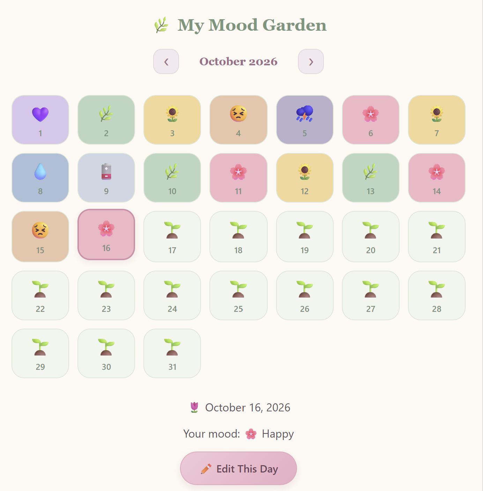

PROJECT 22 · NLP & WEB APP
My Little Journal
A personal mood journaling application featuring emotion analysis, daily reflections, and visual mood tracking.
Python · Scikit-learn · React · NLP
Hello, I'm ♡
I build real-world data science projects using Python, machine learning, data visualization, and interactive dashboards to transform raw data into practical insights and decision-support tools.
I am a Data Science graduate from James Cook University, Singapore Campus, currently building a real-world data science portfolio through my “23 Projects at 23” project series.
My work focuses on data analysis, machine learning, data visualization, and Streamlit dashboard development. I enjoy building practical projects that turn raw data into useful insights and decision-support tools.
I am interested in data analyst, junior data scientist, and analytics roles where I can apply Python, SQL, machine learning, and visualization skills to solve real-world problems.
Python, SQL, Pandas, NumPy
Scikit-learn, Machine Learning Models, Neural Networks
Matplotlib, Dashboard Design, Visual Analytics
Streamlit, GitHub, Jupyter Notebook, VS Code
DATA SCIENCE & CREATIVE EXPLORATIONS
A collection of ideas I've explored, problems I've solved, and things I've brought to life through data and code.

PROJECT 22 · NLP & WEB APP
A personal mood journaling application featuring emotion analysis, daily reflections, and visual mood tracking.
Python · Scikit-learn · React · NLP
Business Software Project
Developing software for a Myanmar-based gold shop and pawn business to support daily operations, customer records, pawn transactions, and business data management.
I am open to data analyst, junior data scientist, analytics, and machine learning opportunities. Feel free to connect with me through email, LinkedIn, or GitHub.